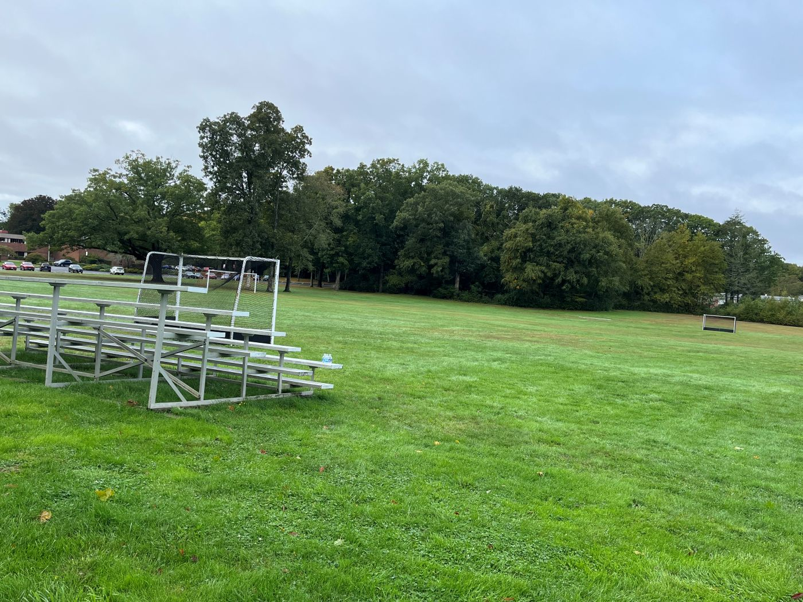

6. Sports, Teamwork & Well-being
| Description | My soccer diary, what I learned from the bench, the LINE UP app I built for my team, and reflections on attention and connection. |
|---|
1. Meaning from the bench: My soccer diary
I began playing school soccer in tenth grade with little experience. I spent most games on the bench. When I returned to Girls’ Junior Varsity soccer in eleventh grade, I began keeping a diary after practices and games.
The diary was not mainly a record of my statistics or athletic improvement. I used soccer to think about how I understood myself. Being on the bench made me ask whether an experience had meaning because of the result or because of how I chose to understand it. I also asked why I kept returning to a place where I often felt like a stranger.
Selected entries from my 2025 soccer diary
September 20, 2025
I stayed on the bench during an away game at Worcester Academy. However, before the game, I succeeded in kicking the ball high. I had not been able to do that even at the end of my first soccer season.
I had also begun helping the captain and team manager carry the team’s water. These were small things, but I felt that I was participating more, both athletically and socially. I began to add my own meaning to an activity that I had mostly endured the year before.
September 29, 2025
During a defensive drill, I stopped one ball by kicking it as quickly as I could. I compared it to moving one grain of sand in the Sahara Desert one millimeter to the left. The desert would still look the same, but a change had happened.
I connected my return to soccer with Nietzsche’s idea of eternal recurrence. I had chosen the same activity again even though I had struggled during my first season. I wondered whether returning to the same difficulty meant being trapped in repetition or receiving another chance to respond differently.
October 1, 2025
We had a game against Pomfret Academy, but I did not play. Another player who, like me, did not usually get much playing time repeatedly asked the coach, “Can I play even for five minutes?”
I had wanted to say the same thing many times, but I had never been able to say it. I supported her when she entered the game. That day, I learned something from her courage rather than from playing.
October 4, 2025
I had usually played as a defender, but during this home game, I played as a midfielder for about five to seven minutes. Some teammates told me that I had played well.
I began to think that the position I had been given did not have to become my fixed identity. I wanted to ask the coach whether I could try playing as a midfielder again.
October 6, 2025
We practiced with the Boys’ JV Soccer team, and I did not defend or kick any balls. I wrote that even “nothing” could become part of the meaning I made from that day.
I also asked why Nietzsche emphasized overcoming oneself. Did I always have to overcome myself? What would happen if I could not become an Übermensch? I did not know exactly what I was trying to overcome within myself. Still, having something to struggle with made me feel alive.
October 9, 2025
During a practice drill, I did not understand the rule until the middle of the activity. It made me think about “otherness,” or my experience of feeling like a stranger.
In tenth grade, I had often sat on the bench worrying about my grades and my life while other players seemed comfortable running across the field. Still, I had chosen soccer again. I wondered whether choosing to return meant that I was not simply trapped in that feeling anymore.
October 10, 2025
During a shooting activity, I missed every shot. Later, when I became the goalkeeper, I blocked three balls. The same practice could be understood as either failure or progress.
This made me think about Buddhism and attachment. If freedom required letting go of attachment, could my constant effort to create meaning become another attachment? Or could creating a new meaning free me from one fixed interpretation of myself?
I did not have an answer. I ended the entry by asking whether creating my own meaning was a kind of bondage or a way of valuing my humanity.
October 11, 2025
During a game against Austin Prep, I finally told the coach, “I want to play.” It was the first time I had directly asked to enter a game since joining the team in tenth grade.
My shame and the fixed belief that I belonged on the bench had become a monarchy inside my own mind! By asking to play, I finally made a small declaration of independence from that self-made trap.
I played for only one minute, but saying the sentence mattered more to me than the length of time I played.
These entries do not form one clear philosophy. I moved from Nietzsche to Buddhism and AP U.S. History because I was still trying to find words for what I felt. I keep these entries because they show how I thought at the time, not because I believe that every comparison was correct.
Soccer gave me a place where ideas about meaning, freedom, shame, and otherness became connected to my body and my relationships with other people. The bench was not only where I waited to play. It became a place where I watched myself and tried to understand why I kept returning.

2. LINE UP: Another way to take part
During the summer after eleventh grade, I began making LINE UP while planning to apply for a student team manager position. After spending two seasons mostly on the bench, I wanted to find another way to support the team even when I was not playing.
In twelfth grade, the school offered fewer sports options and team spots. More students applied, and I was not selected as either a manager or a player. I was disappointed because I had expected to spend my final year with the team.
By that time, however, I had already built much of the app. I shared it with Mr. Brooks, the team coach, and some soccer players in my dorm.
LINE UP allows players to sign in using a jersey number, complete a private mood check-in, follow a team stretch, send cheers, and take part in a weekly team mission. Players can also send messages to the coach without adding their names. The coach can read these messages without seeing which player sent them. I connected the app to a shared database so that check-ins and cheers from different phones could appear as team activity, while each player’s mood remained only on that person’s device.
I do not think an app can replace being on the field. However, making LINE UP gave me another way to think about participation. My soccer diary often asked what it meant to belong when my role was small. Building the app became one practical answer to that question.